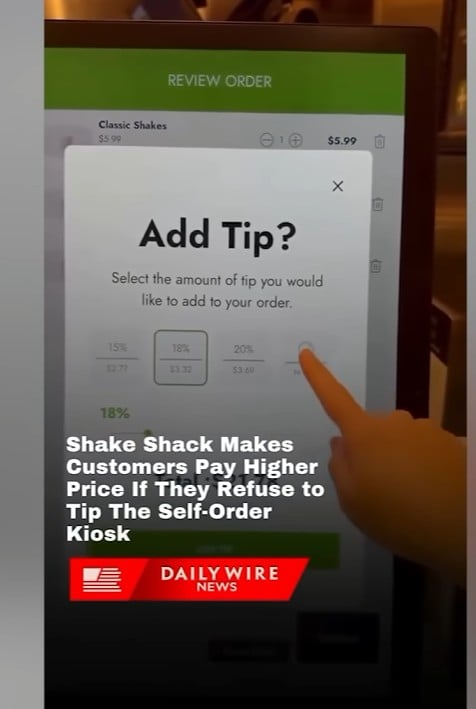
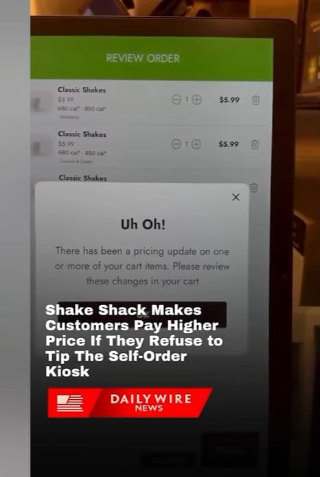
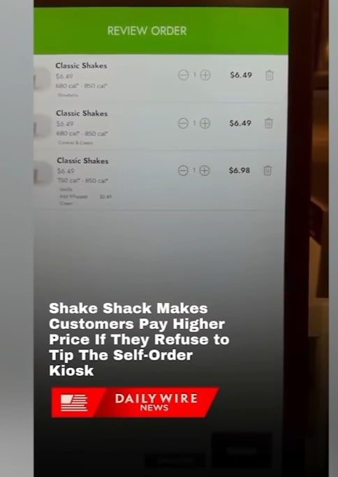

쉐이크쉑 키오스크에서 노팁하니까 가격이 오름 ㅋㅋㅋ



쉐이크쉑 키오스크에서 노팁하니까 가격이 오름 ㅋㅋㅋ
저거엔동의안햇음
키오스크쓰는 패스트푸드점에서 뭔팁이야 ㅋㅋ
꼬우면 한국 와라
미국 공항 라이센스 지점이었고 키오스크 오류라고 발표됨
아 소비자한테 유리한 오류는 절! 대! 안나오지만 일단 오류라니까요?
일단 간보고 괜찮다 싶으면 하려고 했던거...?
오류 맞지?
네..
그래 잘하자
5%정도선은 안되는겨..? 최저가 15퍼여..ㄷㄷ
저러면 나는 그냥 나갈텐데 장사가 잘되나보네
장바구니에 물건을 담은 손님은 불합리한 가격정책에 맞닿뜨려도 물건을 구매한다는 이야기를 본거 같음
배고파서 맛있게 먹을거 기대중인 상황에서 저러면 먹을수밖에 없긴 할 듯.. 바로 옆에 다른 선택지가 있지 않은 이상
uh oh! ㅇㅈㄹㅋㅋ 존나 띠껍네
생각해보니 쉐이크쉑 주문하몀자리로 가져다 줬던것 같음
맥도날드도 그래
미국은 이상하게 전통전통거려
역사가 없는 나라라 전통에 집착이 심한듯
속이뻥~
대표적인게 미국 중국이잖아. 전통이 없으니까 전통찾으려고 일단 이것저것 가져오는듯
전통이 없다는거에 열등감이 있거든ㅋㅋㅋ
주문을 내가 했는데 기계가 팁달라고 지랄임?
팁으로 직원 임금을 주는 거라 팁을 없애봤자 메뉴 가격이 오른다는 것임. 그리고 직원의 서비스에 불만이 있을 때 그걸 표현할 수 있는 가장 강력한 수단 하나가 없어지는 거고.
메뉴가격이오르는게 아니고 팁이 원래 지불할 가격을 숨기는거지 서비스요금이 전부포함된 가격을 보는게 한국에선 상식 같은데 ㅋㅋㅋㅋ
저긴 세금부터도 별도라 그 상식이 안 통함ㅋㅋ
키오스크에 월급줌?
손님한테 서빙을 하는 경우에만 팁을 받는 게 국룰인데 그래도 일하는 직원이 있고 팁으로 직원 인건비 준 거지
팁누르고 팁안주면 어떻게함?
팁 누르면 키오스크에서 선불로 음식값이랑 같이 결제되는 시스템
팁 누르면 액수 눌러야 주문이 이어질수 있음
미국인은 팁을참좋아해

https://youtu.be/qcRiurN1Xx4?si=k1Vnxgk6gUBJWxDg
미국인도 키오스크 팁 안준데
키오스크로 주문했는데 왜
서빙하고 주문받는 사람이 없는데 웃겨
팁누르면 저기서 더 오르나...?
아시안이 팁0%로 주문하면 버거에 침뱉어서 주냐?
대다수 미국인들이 동의한 거라 어쩔 수 없다는 것임